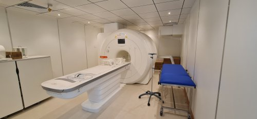

Thời gian làm việc: 07h00 - 16h45 từ Thứ 2 đến Chủ nhật
Trực cấp cứu: 0941.334.115 Trực lãnh đạo:0944.885.626


KHOA CHUẨN ĐOÁN HÌNH ẢNH
Đăng lúc: 08:20:47 23/08/2021 (GMT+7)
Chẩn đoán hình ảnh đóng vai trò quan trọng trong việc chẩn đoán các tổn thương bên trong cơ thể. Thông qua hình ảnh thu được, bác sĩ sẽ có cơ sở để kết luận bệnh và đưa ra phác đồ điều trị đặc hiệu. Khoa Chẩn đoán hình ảnh BVĐK Đại An có chức năng thăm khám, chẩn đoán tổn thương nhờ vào hình ảnh CT-Scan, X-quang kèm những thủ thuật can thiệp khác. Hệ thống y tế tối tân, đội ngũ bác sĩ hàng đầu đã khiến đông đảo người bệnh tin tưởng và gửi gắm sức khỏe lâu dài tại đây.
Khoa Chẩn đoán hình ảnh
Chẩn đoán hình ảnh đóng vai trò quan trọng trong việc chẩn đoán các tổn thương bên trong cơ thể. Thông qua hình ảnh thu được, bác sĩ sẽ có cơ sở để kết luận bệnh và đưa ra phác đồ điều trị đặc hiệu.
Khoa Chẩn đoán hình ảnh BVĐK Đại An có chức năng thăm khám, chẩn đoán tổn thương nhờ vào hình ảnh CT-Scan, X-quang kèm những thủ thuật can thiệp khác. Hệ thống y tế tối tân, đội ngũ bác sĩ hàng đầu đã khiến đông đảo người bệnh tin tưởng và gửi gắm sức khỏe lâu dài tại đây.
1. Trang thiết bị hiện đại bậc nhất
Máy móc công nghệ là yếu tố hỗ trợ đắc lực trong việc chẩn đoán sớm, xác định chính xác tình trạng bệnh. Vì thế BVĐK Đại An rất chú trọng trong việc đầu tư nâng cấp phương tiện kỹ thuật. Các thiết bị tân tiến so với bệnh viện trong nước được Đại An trang bị đầy đủ, đồng bộ nhằm mang đến hiệu suất chẩn đoán hình ảnh cao nhất.
1.1 Hệ thống chụp cộng hưởng từ MRI (MAGNETOM SEMPRA 1.5 TESLA)
Máy cộng hưởng từ MRI được dùng để chụp sọ não, vùng cổ, cột sống, cơ xương khớp, tuyến vú, vùng bụng chậu để phát hiện các tổn thương, bệnh lý. Đại An sử dụng công nghệ chụp cộng hưởng từ MRI để chẩn đoán hình ảnh nhờ từ trường và sóng radio. Nguyên tử Hydrogen bên trong cơ thể sẽ phóng thích năng lượng sóng RF trong quá trình chụp cộng hưởng từ. Năng lượng này được hệ thống thu nhận và sắp xếp ra hình ảnh chi tiết về bộ phận cần chụp.

Hệ thống chụp cộng hưởng từ MRI (MAGNETOM SEMPRA 1.5 TESLA)
Ưu điểm từ máy cộng hưởng từ MRI tại Đại An bao gồm:
· Hình ảnh MRI thu được sẽ sắc nét, khảo sát được đa mặt cắt và chi tiết giải phẫu tốt.
· Hình ảnh tái tạo rõ nét giúp bác sĩ phát hiện được mọi tổn thương bệnh lý bao gồm cả ung thư.
· Máy MRI cao cấp tại Đại An không xâm nhập, không sử dụng tia X, có từ trường đặc biệt an toàn kể cả với trẻ nhỏ hay phụ nữ mang thai.
1.2 Hệ thống máy chụp cắt lớp vi tính MS CT đa lát cắt
Máy MSCT được dùng để tầm soát bệnh lý tim mạch, phát hiện sớm ung thư, chẩn đoán các bệnh lý. Máy chụp cắt lớp còn đặc biệt hữu ích trong trường hợp theo dõi chuyển biến bệnh sau phẫu thuật ung thư. Hiện nay Đại An đang ứng dụng các máy MSCT 32 64 dãy tiên tiến hàng đầu trên thế giới.
Tác dụng vượt trội của máy MSCT 32 64 dãy tại Đại An:
· Cung cấp chất lượng hình ảnh tốt nhất với độ phân giải không gian cao,
· Quan sát tổn thương đa góc độ nhờ việc tái hiện hình ảnh trên không gian 3 chiều và nhiều bình diện.
· Khả năng ghi hình với vận tốc nhanh chụp được cả các cơ quan chuyển động như mạch máu, tim giúp chẩn đoán được các bệnh lý động mạch ngành nguy hiểm.
· Hạn chế liều lượng tia X, giảm bức xạ cho người bệnh, bác sĩ và kỹ thuật viên. Do đó máy MSCT 32-64 dãy an toàn hơn và có thể sử dụng chẩn đoán ở cả trẻ em.
Hệ thống máy chụp cắt lớp vi tính MS CT đa lát cắt
1.3 Công nghệ nội soi dạ dày đại tràng NBI 5P
BVĐK Đại An ứng dụng công nghệ NBI 5P tiên tiến bậc nhất. Chế độ ánh sáng dải tần hẹp giúp bác sĩ quan sát sâu, chi tiết lớp niêm mạc. Khả năng phóng đại hình ảnh lên đến 100 lần giúp bác sĩ có thể phát hiện cả những tổn thương nhỏ nhất. Thông qua nội soi tiêu hóa NBI 5P, mọi bệnh lý như: viêm loét, polyp, HP, ung thư được đưa ra ánh sáng từ giai đoạn rất sớm. Công nghệ NBI 5P còn giúp bác sĩ loại bỏ các tổ chức tiền ung thư ngay trong khi nội soi mà không cần thêm bất kỳ cuộc phẫu thuật nào khác.
Bên cạnh đó, dịch vụ nội soi dạ dày đại tràng tại Đại An còn có những ưu điểm:
· Máy bơm tiêm điện tự động đong đếm lượng thuốc mê phù hợp thể trạng, tuổi tác, giới tính người bệnh. Người bệnh chìm vào giấc ngủ êm ái, không hề thấy đau đớn khó chịu và sau 15 phút tỉnh dậy là quá trình nội soi đã hoàn tất.
· Quy trình soi siêu sạch: Dụng cụ y tế dùng 1 lần Đồ cá nhân riêng biệt.
1.4 Phương tiện siêu âm màu 5D
Máy siêu âm màu 5D ứng dụng phương pháp siêu âm với 3 chiều không gian 1 chiều thời gian cùng 1 chiều chẩn đoán. Đây là thiết bị dùng phổ biến trong sản khoa giúp quan sát được mặt mũi, tay chân và cả hoạt động của thai nhi. Qua đó, bác sĩ có thể phát hiện được những dị tật bẩm sinh để có những phương án xử lý kịp thời. Ngoài ra phương pháp siêu âm này còn được chỉ định để đo da gáy, khảo sát nang noãn, hệ thần kinh trung ương,..
Ưu điểm của kỹ thuật siêu âm màu 5D tại BVĐK Đại An:
· Sóng siêu âm không bị cản lại bởi xương, các tổ chức mô hay khối không khí.
· Tạo hình ảnh có màu, sống động thay cho những tấm hình siêu âm đen trắng giúp nâng cao giá trị chẩn đoán. Tất cả là nhờ đầu dò tiên tiến của máy có thể ghi lại các tín hiệu âm và chuyển động của các bộ phận trên màn hình.

1.5 Máy đo loãng xương toàn thân tiêu chuẩn vàng
BVĐK Đại An trang bị loại máy đo loãng xương cao cấp hai bình diện DEXXUM T từng được WHO công nhận với độ chuẩn xác lên tới 98%. Ưu điểm của máy đo loãng xương tại Đại An so với nhiều dòng máy khác:
· Sở hữu thời gian quét nhanh nhất
· Bác sĩ sẽ đo được độ loãng xương bằng tia X. Lượng tia X là rất nhỏ không gây ảnh hưởng tiêu cực đến người bệnh.
· Vận hành đơn giản nhưng mang đến kết quả đo loãng xương chính xác nhất.
· Thiết kế: chiều cao bàn bệnh nhân là lý tưởng với vóc dáng người Việt Nam
1.6 Hệ thống chụp X-quang kỹ thuật số
X-quang kỹ thuật số dùng để chẩn đoán tổn thương, bệnh lý tại nhiều cơ quan trên cơ thể. Dàn phương tiện máy móc hiện đại tại BVĐK Đại An hỗ trợ quá trình chụp X-quang diễn ra thuận lợi, an toàn và có hiệu quả cao.
Lợi ích từ hệ thống chụp X-quang kỹ thuật số hàng đầu tại Thu Cúc:
· Hình ảnh ít hư, không yêu cầu điều kiện phòng tối nghiêm ngặt và gần như không cần chụp lại
· Có thể thực hiện khảo sát nhiều mô và các cơ quan khác nhau trên cùng 1 phim
· Bác sĩ có thể phóng to, thu nhỏ tùy ý từng vùng muốn quan sát
· Hạn chế sự tác động của tia X đến sức khỏe người bệnh
· Đặc biệt riêng tại Đại An, người bệnh được trang bị áo mặc trong khi chụp Xquang để đảm bảo yếu tố lịch sự, tế nhị mà vẫn mang lại kết quả chuẩn xác.
Ngoài ra, BVĐK Đại An còn rất nhiều thiết bị hiện đại khác đáp ứng tốt nhất nhu cầu khám chữa bệnh
2. Đội ngũ bác sĩ hàng đầu
Chẩn đoán hình ảnh trở thành một khoa mũi nhọn tại BVĐK Đại An và được bệnh nhân gần xa tin tưởng còn vì đội ngũ bác sĩ giỏi chuyên môn sáng y đức. Người bệnh được thăm khám bởi các bác sĩ trình độ cao, vững vàng kinh nghiệm trong việc ứng dụng thiết bị tiên tiến trong chẩn đoán hình ảnh. Bác sĩ sẽ đưa ra kết luận chính xác và phương án điều trị lý tưởng giúp người bệnh phục hồi nhanh chóng.
Đội ngũ bác sĩ tiêu biểu:
· BSCK I Vũ Trọng Hòa Trưởng Khoa Chẩn đoán hình ảnh: Nhiều năm gắn bó với đơn vị, bác Hanh sở hữu óc quan sát, phán đoán tình huống tốt, nhạy bén trước các ca bệnh phức tạp.
· BSCK I Lê Anh Minh Bác sĩ Siêu âm tổng quát: với kinh nghiệm dày dạn từng công tác tại các bệnh viện lớn nhiều năm liền,. luôn được đánh giá là vị bác sĩ tận tụy chu đáo nhất khoa.
·
· BSCK I Bùi Bá Hùng Bác sĩ Siêu âm tổng quát Nguyên trưởng khoa Chẩn đoán hình ảnh Bệnh viện khu vực Thạch Thành
· Bác sĩ Nguyễn Đức Tân Bác sĩ Chẩn đoán hình ảnh: Bác sĩ có nhiều năm kinh nghiệm công tác tại Khoa Chẩn đoán hình ảnh, BV Đa khoa hợp Lực..
3. Dịch vụ y tế chu đáo chuyên nghiệp
· Đội ngũ KTV trẻ trung, nhanh nhẹn, được đào tạo bài bản liên tục.
· Điều dưỡng lễ tân tiếp đón nhiệt tình, chăm sóc chu đáo như người nhà
· Kết quả được trả nhanh chóng ngay sau thăm khám
· Không gian bệnh viện phòng khám khang trang, tiện nghi, sạch sẽ giúp người bệnh an tâm hồi phục
· Cam kết các tiêu chuẩn về vệ sinh, vô khuẩn về trang thiết bị, dụng cụ y tế.
· Áp dụng bảo hiểm y tế giúp người bệnh yên tâm chữa bệnh.
Các tin khác